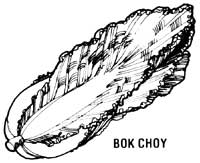
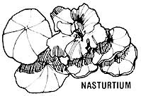
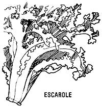
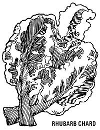
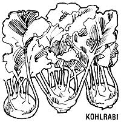
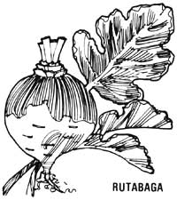
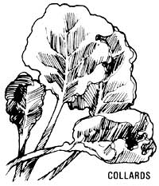

Salads, Salads, And More Great Salads (The Way They Make 'Em In California)
May/June 1978
by Kathryn Hannaford
From Cosmic Cookery by Kathryn Hannaford, copyright 1974 by Starmast Publications, 345 W. Clay St. Stockton, Calif. 95206. Reprinted by permission. This book is available in paperback ($5.95) from the publisher or from any good bookstore.
In 1974, Kathryn Hannaford of Stockton, California published Cosmic Cookery . . . a book of protein-balanced recipes that called for no eggs, fish, fowl, or meat. The book was written, she said, not only "for beginners in natural foods cooking, who know little about the endless combinations of nature's delights and the many ways to prepare them" . . . but also "for the experienced vegetarian who's looking for new ideas and inspiration".
Well, Cosmic Cookery- now in its third printing-does indeed provide both information and inspiration aplenty . . . and as proof of that we offer you Kathryn's suggestions on salads.
California-more than any other state in the Union-is known for its wonderful, inventive salads. But it doesn't matter where you live: Anyone armed with the following secrets can prepare an unlimited variety of beautiful, tempting, California-style salads.
To most people, the idea of a salad with a meal means a few tossed lettuce leaves and tomato wedges . . . with maybe some sliced radishes for added color. But-when you become aware of the varieties of available vegetation that can be used to make really superb salads-you'll give that part of the meal more prominence on your table . . . and perhaps even make the salad course the most colorful and tasty part of your whole lunch or dinner. The following is only a partial list of the many exciting vegetables that can be used in salads.
ASPARAGUS: The tender, sweet tips can be eaten raw or (as the stalks should be) cooked until they're barely done.
BEET GREENS: Wash leaves well and cut into bite-sized pieces. High in vitamin C.
BEETS: Scrub well with a vegetable brush, dry, and grate. Very sweet and juicy this way. High in iron.
BELL PEPPER: Remove the inner core, seeds, and membrane and slice into julienne strips, or garnish your salad with pepper rings.
BERMUDA ONION: These mild red onions make colorful salad decorations when cut into thin rings. The rings may be marinated and served alone or added to bean salads.
BOK CHOY: Both the green leaves and the white, bulbous base can be chopped and used.
BROCCOLI: All parts of this colorful green flowering vegetable can be added to salads. Cut the flowerets, leafy greens, and stems into very small pieces.
CABBAGE, GREEN: This slightly sulfurous-tasting vegetable is at its best when grated or shredded to release its juices.
CABBAGE, RED: Prepare in the same ways as green cabbage. Nice for color.
CARROTS: Shred the bright orange root finely to release juice, and mince the ferny green tops. High in vitamin A.
CAULIFLOWER: Use raw, and cut into small, bite-sized flowerets. The edible leaves surrounding the base of the head can be eaten like collard greens . and may also be chopped and used raw in salads, or set aside to be eaten later as steamed greens.
CELERY: Slice the long stalks diagonally, or chop or mince them. The tender, sweet inner leaves enhance any salad, but avoid using the bitter outer leaves.
CHARD, RHUBARB: The broad, dark-green leaves and rich-red stalks may be finely cut and added sparingly to salads.
CHARD, SWISS: This is the same as rhubarb, with the exception of its flat white stalks. Follow the procedure for rhubarb chard.
CHINESE CABBAGE: This juicy relative of the cabbage has long broad leaves with curly edges, which are delicious-chopped-as a salad green. Wash the leaves carefully.
CLOVER: There's a tangy, sour taste to this well-known field grass. Use both the stems and the leaves in salads.
COLLARDS: The leaves should be washed carefully and chopped finely. They're also delicious served steamed with lemon juice.
CUCUMBER: A sweet, meaty vegetable, traditionally sliced in rounds. Peel the skin if it tastes bitter or shows evidence of having been waxed.
DANDELION GREENS: Though slightly bitter, these wild greens are very tasty . . . especially while still young and tender. Wash them well and use them sparingly for flavor ac cents. Try marinating them for an additional treat.
ENDIVE and ESCAROLE: Similar types of curly, loose-leaf lettuce with a slightly bitter flavor. Wash and chop, and add sparingly to other lettuces. They lend an interesting texture to salads.
FENNEL (ANISE): The bulbous white root and green leaves taste like licorice, and are delicious raw. Wash and chop to garnish a salad. Use sparingly at first.
GARLIC: This famous pungent bulb contains small cloves which can be peeled and then rubbed around the interior of the salad bowl-before the ingredients are added-for extra flavor zest.
KOHLRABI: Similar to the turnip, but grows above ground. The bulky part must be pared, then grated or thinly sliced.
LEEKS: A type of onion similar to scallions, only sweeter and much larger. These should be washed very thoroughly, then chopped finely.
LETTUCE, BUTTER: Known in many parts of the country as Boston lettuce, these small, sweet heads of light-green to yellow leaflets must be washed carefully and torn by hand.
LETTUCE, HEAD: Also called iceberg lettuce. Wash briefly, then remove the wilted outer leaves and save them for soup stock Chop, tear, or shred the crisp, firm head.
LETTUCE, RED LEAF: These loose heads are composed of sweet, tender leaves with curly, reddish tips. They, like butter lettuce, should be washed carefully and hand torn.
LETTUCE, ROMAINE: Has long, crisp leaves with crunchy spines that-chopped or torn-add body to a salad.
MINT: A delicious common garden plant with a refreshing flavor. Wash the leaves and chop a few into your salads, or mince some to add a new zing to salad dressing.
MUSHROOMS: Their delicate flavor and meaty flesh are welcome in any salad. Slice them lengthwise to show their pretty shape.
MUSTARD GREENS: These are long, tightly curled leaves with a hot, tangy flavor. Wash them well and use them sparingly for their piquancy.
NASTURTIUM: Both the leaves and the buds of this flower can be used.
PARSNIPS: Similar to turnips, only they have a more slender bulb. Wash and grate them.
PEAS, FRESH GREEN: Choose small pods with firm, tender, young peas. Remove the peas from the pods and add them-raw-to your salads.
RADISHES: Wash them, trim off the ends, and either leave them whole (to be scored into decorative "rosebuds") or slice them thinly . . . to add a crisp, tangy taste to the salad course.
RUTABAGA: Also called Swedes or Swedish turnips, these large vegetables are related to turnips and parsnips. The round, firm, meaty flesh is best sliced paper-thin or grated.
SCALLIONS: These are of the onion family, but much smaller than their relatives the leeks. Trim the roots from the white bulbs, and slice off the opposite ends where the shoots are greenest, then wash them and thinly chop or finely mince them.
SOUR GRASS: The children find this tasty sour stem and small yellow blossom growing in fields, and bring it home for our salads. Wash and chop the whole thing.
SPINACH: Its spear-shaped dark-green leaves and stems are slightly astringent but have a deep, rich flavor. Wash each leaf separately, as they tend to be gritty, then tear or slice it into pieces.
SPROUTS: These are indispensable in salads. Many beans and seeds can be sprouted inexpensively at home to add tremendous nutrition to your raw salads. We've had success with lentil, soybean, garbanzo bean, mung bean, adzuki bean, and alfalfa seed sprouts in our own kitchen.
TOMATOES: Use small, whole cherry tomatoes, or slice larger tomatoes into bite-sized sections.
WATERCRESS: This plant is found growing in shallow brooks. Its dark-green, shiny leaves and crisp stems contribute a fresh, peppery taste to salads.
ZUCCHINI: Use this delicate green squash while it's still quite firm and before it grows larger than medium-sized. Wash it and cut it-peel and all-into thin rounds or matchstick pieces.
Now that you've expanded (I hope) your conception of what can go into a salad, here are some ideas on how to "put it all together".
BEET SLAW
1 cup raw grated beet, unpeeled but scrubbed well
2 cups grated carrot or shredded cabbage (or one cup of each) salt to taste
Lemon-Honey Dressing (recipe to follow)
Mix the vegetable ingredients together and toss them with the salt, then serve with the dressing. As a variation, add 1/2 cup currants and 1/2 cup chopped walnuts. Serves six.
MARINATED TOMATO SALAD
4 sliced tomatoes
3/4 cup oil
3 tablespoons vinegar
1-1/2 teaspoons sea salt
1/4 teaspoon freshly ground black pepper
a dash of dry mustard
Marinate the tomato slices in a mixture of all the other ingredients for two to three hours. Drain and serve on a bed of lettuce or watercress. Serves six to eight.
DATE WALDORF SALAD
1 cup diced celery
1 cup apple, cored and diced
1/2 cup chopped walnuts
1/2 cup chopped dates
1 cup Sweet Soy Mayonnaise Dressing (recipe to follow)
Mix all ingredients well, and chill before serving. Serves six.
CARROT-DATE-CABBAGE SLAW
2 cups minced carrot
2 cups minced cabbage
1/2 cup dates, pitted and finely chopped
1/2 cup raw sunflower seeds
1 cup Sweet Soy Mayonnaise Dressing (recipe to follow)
4 green bell peppers
Gently mix all ingredients . . . don't overmix. Stuff into the raw bell pepper shells (from which you've removed all the seeds and membranes). Serves four.
COLE SLAW
1 head of green cabbage sea salt and freshly ground black pepper to taste
3/4 cup lemon juice
1-2 teaspoons honey
3/4 cup oil
sesame salt to taste (recipe to follow)
Shred the cabbage as finely as possible to release most of the juices (which is so important if you want to make the best tasting cole slaw). A good shredding method is to cut the cabbage head in quarters-lengthwise from the core to the top-and remove the core. Then shred lengthwise with a very sharp knife . . . as thinly as possible. Sprinkle the shredded cabbage with salt and pepper. Blend the lemon juice, honey, and oil, and pour this dressing over the slaw. Toss well, and add sesame salt upon serving.
As a variation, use red cabbage and add 2/3 cup of white seedless raisins. Or add one cup of grated apple for each cup of green cabbage, and dress with Yogurt Dressing (recipe to follow). Yields six to eight cups.
CARROT RAISIN SALAD
2 cups grated carrot
1/2 cup raisins or currants
1/4 cup honey
1/4 cup oil
3/8 cup lemon juice (or slightly more or less, to your taste)
Mix the carrot and raisins together, then combine the liquid ingredients and toss them with the carrot/raisin mixture. As a variation, use 1/4 cup lemon juice and 1/8 cup orange juice rather than all lemon juice, or add two cups of grated apple to the salad Serves three.
LEMON-HONEY DRESSING
1/2 cup oil
1/2 cup lemon juice
1-1/2 teaspoons honey
Pour all the ingredients into a glass jar, screw on the lid, and shake well.
SWEET SOY MAYONNAISE DRESSING
1 cup soy milk powder (one commercial brand is Fearn Natural Soya Powder, made by Richard Foods Corporation in Melrose Park, Illinois and sold at many health food stores)
2 cups water
1/4 cup vinegar
1/4 cup honey
1-1/2 teaspoons sea salt oil as needed
1 tablespoon lemon juice honey to taste
1 cup yogurt a dash of cinnamon
Whisk together the soy milk powder and water in the top of a double boiler, and double boil for 20 minutes on medium-high heat, stirring frequently so that the mixture will be smooth. Place it in the refrigerator to cool.
Next, blend together the vinegar, honey, and salt, and pour the liquid into a temporary container. Now put enough oil into the blender to cover the blades, turn on the machine at medium-low speed, and gradually add to the oil three to four tablespoons of the cooled soy milk, until the mixture thickens and the blades no longer turn easily. Add three to four tablespoons of the vinegar mixture, very carefully aiding the blending process with a spatula.
Use the spatula to turn the mayonnaise from the blender into a bowl, and repeat the entire process (starting with the oil) until all of the vinegar mixture has been used. (If there's any extra soy milk, save it for other purposes.) When all the mayonnaise is in the bowl, stir in the lemon juice to whiten it.
Now that you've made soy mayonnaise, turn the creamy mixture into Sweet Soy Mayonnaise Dressing by adding the remaining ingredients.
SESAME SALT
8 cups brown (unhulled) sesame seeds
1 cup sea salt
Roast the sesame seeds in a dry skillet, starting out with the heat on medium-high and reducing it to a medium-low flame when the seeds get fragrant and begin to toast. Stir constantly, moving the seeds away from the sides of the pan and toward the center in a circular pattern (if they brown unevenly, the finished product won't grind uniformly).
When the seeds are all lightly browned and begin to poi, take a pinch of them between your thumb and forefinger. If they crack easily, they're done. Empty them into a temporary container.
Now toast the sea salt over medium-high heat for five minutes, and mix the salt and the seeds together well. Blend no more than a cup of this mixture at a time for about five-second intervals, stirring with a long utensil (like a chopstick) when the blender is off to keep the sesame salt from packing together. The idea is to blend the seeds and salt just long enough to make a granular meal. Store in an airtight jar to retain freshness. Yield: about eight cups.
YOGURT DRESSING
4 tablespoons lemon juice
1/4 cup oil
1/4 cup water
2 tablespoons honey
4 tablespoons grated onion
1 cup yogurt (or sour cream)
1-1/2 cups soy mayonnaise (see recipe contained within Sweet Soy Mayonnaise Dressing recipe above)
2 teaspoons dill weed
1 teaspoon celery seed
2 teaspoons sea salt
1/4 cup chopped parsley
a pinch of cayenne pepper
Blend together the first five ingredients. Mix the remaining ingredients in a bowl and combine them with the blended mixture, stirring them well with a wire whisk. Serve chilled. Makes 3-1/2 cups.
|
 |
 |
 |
|
 |
 |
 |
|
 |
 |
|